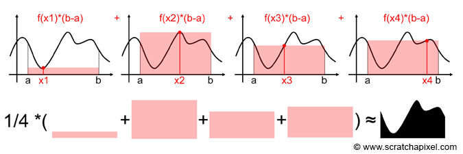

What I wish I’d known about statistics#
Probability is a subtle concept#
Money quote: “I must premiss that we, all of us, use this word [“probability”] with a degree of laxity which corrupts and rots our reasoning to a degree that very few of us are at all awake to.” Charles S. Pierce, 1910
i) 0 ≤ p(E) ≤ 1.
ii) the certain event has probability 1
iii) The probability of the union of mutually exclusive events is the sum of the probabilities of the individual events.
All of these interpretations are consistent with these axioms:
- 3.1 Classical Probability
- 3.2 Logical/Evidential Probability
- 3.3 Subjective Probability
- 3.4 Frequency Interpretations
- 3.5 Propensity Interpretations
- 3.6 Best-System Interpretations
Bayes theorem#
Bayes theorem gives the formula for computing conditional probabilities. This formula applies regardless of your definition of probability, as long as it obeys Kolmogorov’s axioms.
Frank Harrell on Bayes#
If you tossed a coin 100 times resulting in 60 heads, would you rather know the probability of getting > 59 heads out of 100 tosses if the coin happened to be fair, or the probability it is fair given exactly 60 heads? The frequentist approach is alluring because of the minimal work in carrying out a test of the null hypothesis θ=½. But the Bayesian approach provides a direct answer to the second question, and requires you to think. What is an “unfair” coin? Is it θ outside of [0.49, 0.51]? What is the world view of coins, e.g., is someone likely to provide a coin that is easily detectable as unfair because its θ=0.6? Was the coin chosen at random or handed to us?
and for the correlation coefficient the statements would be something like:
Bayes: According to the model, the correlation coefficient is between -0.83 and -0.98 with 99% probability
Frequentist: According to the test, we are 95% confident that the correlation coefficient has a value somewhere between -0.51 and -0.99; we don’t really know if this interval contains the value, but if we could repeat this analysis on infinite different samples, we would be wrong just 5% of the time!
What about probability of precipitation?#
11.1.1 Interpretation of probabilities
Probabilities can be interpreted in two ways:
(i) Relative frequency interpretation.
(ii) Subjective interpretation.
UK Met. Office continued:
Thus consider a ‘probability of precipitation (PoP) forecast of 30%’:
(i) Relative interpretation: the present meteorological situation, observed on a large number of occasions, would give rise to precipitation on 30% of the time.
(ii) Subjective interpretation: the forecaster’s judgment is that the odds against precipitation are 7 to 3 (odds against no precipitation being 3 to 7). Generally, if p is the probability, the odds against the event are: (1/p - 1) to 1. (Ed. note – see hartleys and decibans )
(iii) The subjective interpretation gives a practical way of thinking about probabilities.
So what’s a graduate student to do?
Case study: linear regression two ways#
Frequentist first, following Hogg et al., 2010#
“It is a miracle with which we hope everyone reading this is familiar that if you have a set of two-dimensional points (x, y) that depart from a perfect, narrow, straight line y = m x + b only by the addition of Gaussian distributed noise of known amplitudes in the y direction only, then the maximum-likelihood or best-fit line for the points has a slope m and intercept b that can be obtained justifiably by a perfectly linear matrix-algebra operation known as “weighted linear least-square fitting”. This miracle deserves contemplation.”
The math, following: Fleshman, 2019#
The generating process:
where \(\epsilon\) is normally distributed with mean \(\mu=0\) and standard deviation \(\sigma\).
This means that the conditional (frequentist) probability that we make an observation \(y\) given \(x\) is to:
Since the data points are assumed to be independent, their probabilities multiply, and we define the likelihood of observing the data given the parameters \((\theta_0,\theta_1,\sigma)\) as: $\( L_{X}\left(\theta_{0}, \theta_{1}, \sigma^{2}\right)=\frac{1}{\sqrt{2 \pi \sigma^{2}}} \prod_{(x, y) \in X} e^{\frac{-\left(y-(\theta_{1} x +\theta_{0})\right)^{2}}{2 \sigma^{2}}} \)$
Maximum likelihood#
Solve this for the set of parameters that give the maximum likelihood by taking the \(\log\) and finding the maximum by setting the derivative = 0 and solving for \((\theta_0, \theta_1)\). This gives you the usual relationship for the slope and intercept in terms of the data statistics (\(\overline{x}\),\(\overline{y}\)). Note that we don’t need to know \(\sigma\), because we’re assuming it’s constant.
Code this up#
A couple of lines of python
import numpy as np
from matplotlib import pyplot as plt
import pandas as pd
def find_line(xs, ys):
"""Calculates the slope and intercept"""
# number of points
n = len(xs)
# calculate means
x_bar = sum(xs)/n
y_bar = sum(ys)/n
# calculate slope
num = 0
denom = 0
for i in range(n):
num += (xs[i]-x_bar)*(ys[i]-y_bar)
denom += (xs[i]-x_bar)**2
slope = num/denom
# calculate intercept
intercept = y_bar - slope*x_bar
return slope, intercept
Use it to find \(\theta_0, \theta_1\)#
First create 200 simulated measurements using the model#
size = 200
true_intercept = 1
true_slope = 2
true_sigma = 0.5
x = np.linspace(0, 1, size)
# y = a + b*x
true_regression_line = true_intercept + true_slope * x
# add noise
y = true_regression_line + np.random.normal(scale=true_sigma, size=size)
data = dict(x=x, y=y);
Plot the data with the true regression line#
fig = plt.figure(figsize=(7, 7))
ax = fig.add_subplot(111, xlabel='x', ylabel='y', title='Generated data and underlying model')
ax.plot(x, y, 'x', label='sampled data')
ax.plot(x, true_regression_line, label='true regression line', lw=2.)
plt.legend(loc=0);
Compare the true and estimated (green) regression lines#
slope, intercept = find_line(x,y)
fit_y = intercept + slope * x
ax.plot(x, fit_y)
display(fig)
Use bootstrap resampling to estimate confidence intervals#
def draw_bs_pairs_linreg(x, y, size=1):
"""Perform pairs bootstrap for linear regression."""
# Set up array of indices to sample from: inds
inds = np.arange(len(x))
# Initialize replicates: bs_slope_reps, bs_intercept_reps
bs_slope_reps = np.empty(size)
bs_intercept_reps = np.empty(size)
# Generate replicates
for i in range(size):
bs_inds = np.random.choice(inds, size=len(inds))
bs_x, bs_y = x[bs_inds], y[bs_inds]
#
# use np.polyfit for order 1 linear model
#
bs_slope_reps[i], bs_intercept_reps[i] = np.polyfit(bs_x, bs_y, 1)
return bs_slope_reps, bs_intercept_reps
Plot 100 different regression lines#
slopes, intercepts = draw_bs_pairs_linreg(x, y, size=100)
for the_slope,the_intercept in zip(slopes,intercepts):
fit_y = the_intercept + the_slope * x
ax.plot(x, fit_y)
display(fig)
Histogram resampled \(\theta_0\) and \(\theta_1\)#
fig, ax = plt.subplots(1,2,figsize=(12,6))
ax[0].hist(slopes); ax[0].set_title("slopes");
ax[1].hist(intercepts);ax[1].set_title("intercepts");
What’s wrong with this workflow?#
No way to introduce uncertainty in x
Unrealistically simple uncertainty in y (constant \(\sigma\))
Can’t make statements as frequentists about uncertainty in \(\theta_0, \theta_1\)
Can’t deal with outliers (robust regression)
Take 2: The Bayesian version#
Start with Bayes theorem, given the logical/subjective definition of probability:
The likelhood is exactly the same as the frequentist version:
Note that the Bayesian version makes clear that the likelihood is a function of the data for a fixed set of generating function parameters.
What to do about \(p(\text{proposition})\) – the prior probability#
Take \(p(\theta_1)\) and \(p(\theta_0)\) as normally distributed with mean=0 and \(\sigma = 20\)
Take \(p(\sigma)\) as Halfcauchy with \(\beta=10\)
Again, assume independence, so prior is \(p(\theta_1) \times p(\theta_0) \times p(\sigma)\)
Essentially, we want to “let the data speak” so these are quite flat distributions that don’t put any real preconditions on acceptable values for \(\theta_0, \theta_1, \sigma\).
So Bayes rule says:
and we can get, for example the pdf of \(\sigma^2\) by marginalization:
How to solve this integral?#
Hamiltonian Markov Chain Montecarlo
A (very) fancy version of naive Monte Carlo integration:
{kind=link}
Code this using pymc3#
import pymc3 as pm
with pm.Model() as model: # model specifications in PyMC3 are wrapped in a with-statement
# Define priors
sigma = pm.HalfCauchy('sigma', beta=10, testval=1.)
intercept = pm.Normal('Intercept', 0, sigma=20)
slope = pm.Normal('slope', 0, sigma=20)
# Define likelihood
likelihood = pm.Normal('y', mu=intercept + slope * x,
sigma=sigma, observed=y)
# Inference!
trace = pm.sample(3000, cores=8, tune=2000) # draw 3000 posterior samples using NUTS sampling
axes=pm.plot_trace(trace[100:],figsize=(12, 7));
plt.figure(figsize=(7, 7))
plt.plot(x, y, 'rx', label='data')
generating_fun = lambda x, sample: sample['Intercept'] + sample['slope'] * x
pm.plot_posterior_predictive_glm(trace, lm=generating_fun, samples=100,
label='posterior predictive regression lines')
plt.plot(x, true_regression_line, label='true regression line', lw=3., c='y')
plt.title('Posterior predictive regression lines')
plt.legend(loc=0)
plt.xlabel('x')
plt.ylabel('y');
Well, that seemed complicated – but worth it?#
Advantages:
Estimate of \(\sigma\)
Distributions instead of single numbers for \(\theta_0\) and \(\theta_1\)
Actual (Bayesian) uncertainty estimates for all three parameters
We can check the model against new data (“posterior predictive checks”)
Flexible approach generalizes to any generating function we can write in terms of distributions.
Example: Robust regression
Example: Robust correlation
Example: the pymc3 gallery
Bottom line#
Frequentists – data-oriented, controlled clinical trials with preregistration, lab scientists
all about the sample space
Bayesians – more model oriented, often interested in parameter estimation, understanding the data generating process (i.e., our tribe for many in EOAS)
All of this is distinct from null hypothesis testing/p-values/Bayes factors, which when used naively have created replication issues in some research communities. Pithy summary from Gelman: The difference between significant and insignificant is not statistcially significant
In 1983 I needed Hierarchical Bayesian Regression, I was too early by about a decade.
Bayesian updating via Bayes rule, and the logical/subjective interpretation of probability is closely connected to machine learning
Coda: An example of the debate on Bayesian model comparison#
To Bayes or not to Bayes – Scales and Sneider (1997)
Gelman and Shalizi’s answer to those issues – posterior predictive checking
Further reading – all books available online through the UBC library#
-
Great read by the Richard McElreath, director of the Max Planck Institute for Evolutionary Anthropology – well written and very accessible – nice treatment on the connection between statistics and information theory
Statistics, data mining and machine learning in astronomy
Lots of pertinent examples from 4 astronomers – closely related to our typical research problems
Related article by one of the co-authors:
-
Best intro to pymc3
Hogg et al. Fitting a model to data – motivation for the regression example in this talk – read the footnotes
Hogg et al. on conditional probability – pdfs have units!
Galleys of the 2nd edition of Kevin Murphy’s “Machine Learing: A probabilistic perspective”. Good advanced undergrad grad textbook with great appendices: murphy_pm1.pdf. python code